Введение в избранные каталоги
Избранные каталоги — это удобный список каталогов, которые вы используете наиболее часто.
На диске ничего не создается, это просто список ярлыков для быстрого доступа к "горячим" каталогам.
Используя их для перехода в каталог, вы не будете как обезьяна прыгать с ветки на ветку в вашем дереве каталогов.
Кроме того, чтобы не забыть, хорошо иметь список ссылок на важные для вас каталоги.
Даже если вы не заходите в них очень часто, всё равно сэкономите время, когда это понадобится, потому что вам не придётся их искать.
Из главной панели вы можете увидеть избранные каталоги в виде всплывающего меню.
При щелчке по одной из записей вы сразу перейдёте в заданный каталог.
Вам не придётся переходить по папкам, из одной в другую, чтобы достичь цели.
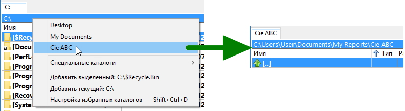
Ниже перечислены общие действия, связанные с избранными каталогами
В главном меню выберите "Команды" и далее "Избранные каталоги".
Появится всплывающее меню, далее вы можете щёлкнуть по пункту и будет открыт соответствующий ему каталог.
Вы можете нажать кнопку со звездочкой "*" в правом верхнем углу активной файловой панели.
Вы можете создать на панели инструментов кнопку с внутренней командой cm_DirHotList.
Для появления всплывающего меню вы также можете использовать двойной щелчок по заголовку активной вкладки.
В главном меню выберите "Настройки" и далее "Настройка избранных каталогов".
Вы увидите то же самое дерево, как и в меню избранных каталогов в главной панели, но с большим количеством функций для редактирования, перемещения и т.д.
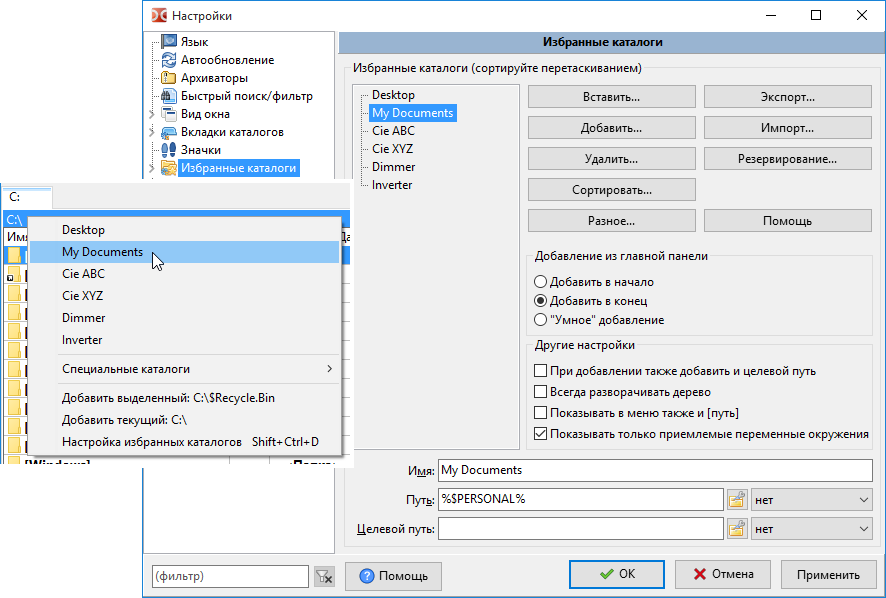
Во всплывающем меню избранных каталогов всегда есть пункт быстрого доступа к соответствующей странице окна настроек.
Вы можете добавить кнопку с внутренней командой cm_ConfigDirHotList.
Самый простой способ:
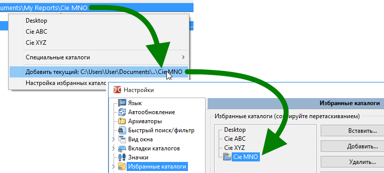
Далее мы увидим, что есть гораздо больше способов добавить запись в избранные каталоги.
По умолчанию при добавлении каталога в избранные именем записи станет имя последней папки в пути.
Но если вы хотите, то можете переименовать её: просто перейдите в поле "Имя" и введите легко запоминающееся.
В этом примере имя папки "doc", но именем записи будет "Documentation" и именно его вы увидите во всплывающем меню.
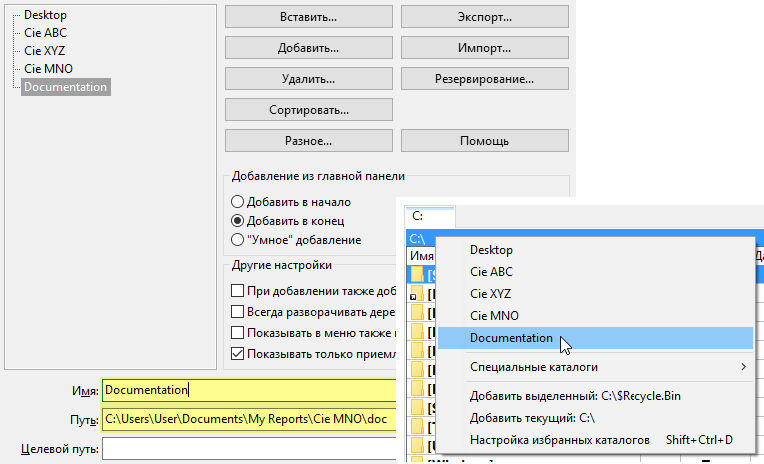
Кроме добавления каталога, который будет открыт в активной панели, вы также можете указать "Каталог назначения" для неактивной панели.
Таким образом, для часто повторяющихся действий, когда вам нужно скопировать данные из каталога "А" в каталог "В", вы будете просто выбирать соответствующий пункт меню избранных каталогов и DC установит необходимые каталоги в активной и неактивной панелях.
Для того, чтобы определить каталог назначения, просто укажите его в поле "Целевой путь".
В примере ниже показана папка "Directory A" с "Directory B" в качестве каталога назначения:
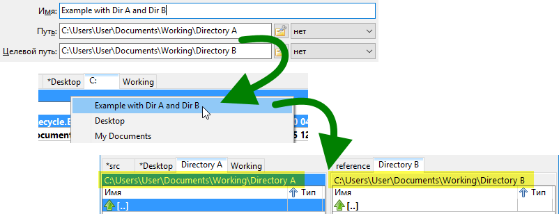
Справа от полей "Путь" и "Целевой путь" есть выпадающие меню, позволяющие задать порядок сортировки в панели после открытия.
Так, если установить "Дата 9-0", то при использовании избранных каталогов в файловой панели не только будет открыт определённый путь, но и будет переключена на обратный хронологический порядок сортировка по дате.
Установите значение "нет", если не хотите менять сортировку в открываемом каталоге.
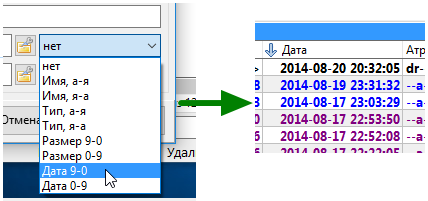
Конечно, вы можете работать с абсолютным путем, и это будет нормально работать на ЭТОЙ машине.
Но давайте предположим, что у вас на USB-флешке есть Double Commander с большим количеством других инструментов, подобно швейцарскому ножу.
Тогда вы можете пожелать использовать пути, относительные к каталогу Double Commander.
Допустим, у вас есть путь "E:\PortableApps\Notepad++Portable\Data\Config\" и это отлично работает.
Но вы можете сделать его относительным к каталогу "Double Commander" и перестать зависеть от буквы диска: "%commander_path%\..\..\Notepad++Portable\Data\Config\".
Чтобы помочь вам понять, что вводить (другими словами, сколько "..\" использовать!), справа от полей "Путь" и "Целевой путь" есть небольшая кнопка, показывающая всплывающее меню с различными маленькими инструментами для изменения и получения желаемого пути.
Но это лишь одна из возможностей использования этой кнопки.
Краткий обзор того, что вы там найдёте:
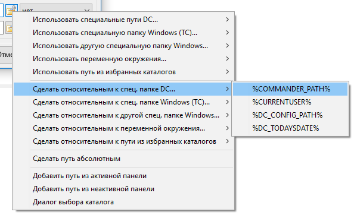
Со временем список избранных каталогов растёт и вы можете пожелать изменить порядок записей: просто перетаскивайте мышью выделенную на новое место.
С зажатой клавишей Ctrl можно выделить более одной записи.
Если список избранных каталогов очень длинный и новое место находится слишком далеко, то использовать перетаскивание будет не очень удобно.
Вы можете выбрать нужную запись, щёлкнуть по кнопке "Разное", выбрать в меню пункт "Вырезать выделенные", затем переместить курсор к новой позиции, снова щёлкнуть по кнопке "Разное" и выбрать пункт "Вставить вырезанное".
С зажатой клавишей Ctrl можно выделить более одной записи.
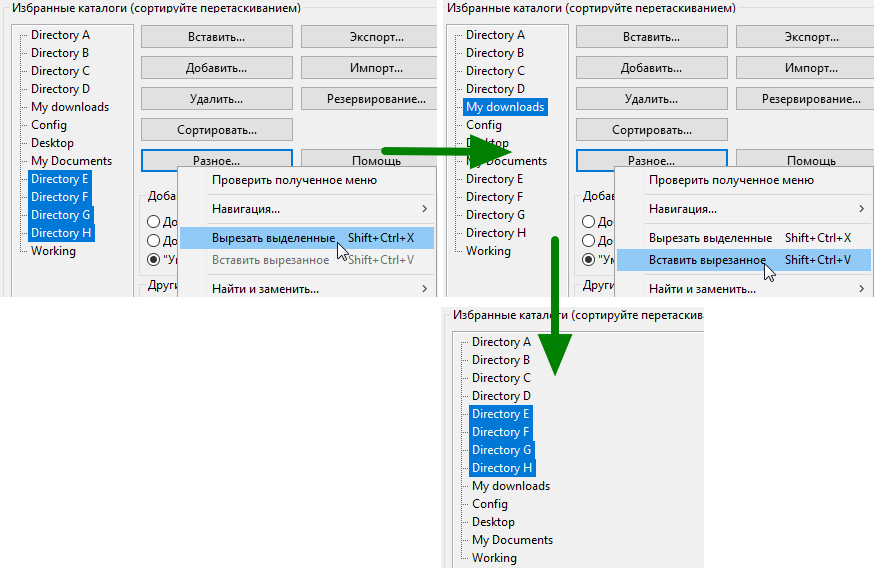
Если вы ярый поклонник избранных каталогов, подобно автору этих строк, одномерного списка вам будет недостаточно!
Double Commander позволяет создавать в избранных каталогах подменю, более того, вы можете использовать подменю внутри подменю.
Это означает, что вы можете организовать избранные каталоги так, как вам удобно.
Чтобы добавить подменю, щёлкните по нужному месту правой кнопкой мыши и выберите пункт "Добавить подменю".
Будет создано подменю с именем "Подменю" и с записью с именем "Имя записи".
Как видите, в поле ниже вы можете дать подменю осмысленное имя.
Теперь вы можете добавить в подменю новые записи, переместить в него имеющиеся и т.д.
Обратите внимание, вы можете перемещать или вырезать и вставлять и подменю, что упростит создание и перестраивание списка избранных каталогов.

Имея большое количество записей, можно удобно упорядочить список, добавив разделители для создания категорий.
Чтобы добавить разделитель, просто переместите курсор к нужной позиции, щёлкните правой кнопкой мыши и выберите "Добавить разделитель".
В окне настроек в дереве записей DC покажет линию с точками, но во всплывающем меню избранных каталогов вы увидите нормальный разделитель меню.
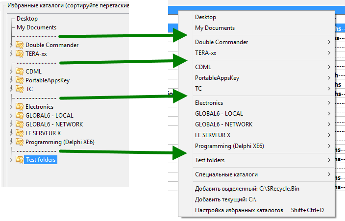
Как было описано выше, перетаскиванием записей вы можете добиться желаемого вида избранных каталогов.
Но если вас устраивает работать с именами, расположенными по алфавиту, то вы можете использовать встроенные функции сортировки.
Всё просто: выделите записи, которые хотите отсортировать, нажмите кнопку "Сортировать..." и выберите в выпадающем меню подходящую для вас функцию сортировки.
Доступно пять вариантов сортировки:
Как уже было сказано ранее, ни один из способов сортировки не будет перемещать запись через разделитель.
Просто чтобы убедиться, что вы верно поняли, смотрите пример ниже: папка "Root" всегда будет оставаться на своём месте, так как под ней есть разделитель.
Разделители полезны не только для визуального разделения, но и как ограничители сортировки!
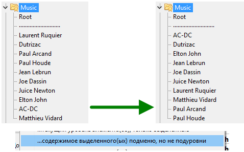
Ниже будут описаны реже используемые возможности, но тем не менее о них всё равно полезно знать.
По мере того, как ваш список избранных каталогов растёт, вы можете пожелать на всякий случай сделать резервную копию, чтобы не потерять ценные ссылки.
Для этого в правой части окна настроек есть кнопка "Резервирование", нажмите на неё и в появившемся меню выберите пункт "Сохранить резервную копию избранных каталогов".
Резервная копия будет сохранена в папку "Backup" в каталоге с файлами конфигурации Double Commander.
Файл сохраняется с расширением ".hotlist", имя файла включает в себя текущие дату и время.
Аналогично, как и выше, нажимаете на ту же кнопку "Резервирование", а в меню выбираете пункт "Восстановить избранные каталоги из резервной копии". В появившемся окне выберите копию, которую требуется восстановить.
При восстановлении из резервной копии текущий список избранных каталогов будет очищен, после чего будут добавлены записи из файла.
Если вы хотите восстановить из резервной копии только некоторые записи, то можете воспользоваться функцией "Импорт": будет предложено указать файл резервной копии, а затем выбрать из него те записи, которые вы хотите добавить.
Вы можете пожелать экспортировать свои избранные каталоги (или часть списка), чтобы не добавлять их по одному на другом компьютере или другой копии DC.
Чтобы это сделать, нажмите кнопку "Экспорт..." и выберите "...в файл избранных каталогов (.hotlist)", вам будет предложено ввести имя файла и указать место для сохранения.
Теперь вам будет предложено выбрать, что вы хотите экспортировать.
Вы можете экспортировать всё дерево или выбрать записи по одной.
Вы можете выбрать всё подменю без выделения записей в нём, просто выделите имя подменю.
С зажатой клавишей Ctrl можно выделить более одной записи.
Затем, на другом компьютере, щёлкаете "Импорт...", выбираете в меню "из файла избранных каталогов (.hotlist)" и далее вам нужно будет указать файл для импорта.
Аналогично, как и с экспортом, вы можете импортировать все записи или же выбрать только нужные.
Импортируемые записи будут добавлены в конец вашего списка.
Double Commander также может экспортировать/импортировать избранные каталоги в/из Total Commander.
Давайте предположим, что вы хотите импортировать некоторые записи из Total Commander.
В окне настроек избранных каталогов нажмите кнопку "Импорт...", выберите "из файла "wincmd.ini" от TC" и укажите файл "wincmd.ini".
Если вы не знаете, где расположен этот файл, в окне Total Commander щёлкните по пункту "Справка" в главном меню, выберите пункт "О Total Commander..." и в открывшемся окне будет показано расположение INI-файла.
Появится дерево записей, считанных из INI-файла Total Commander, теперь вы можете импортировать все записи или же выбрать только нужные.
Для выбора нескольких записей используйте зажатую клавишу Ctrl.
Импортируемые записи будут добавлены в конец вашего списка.
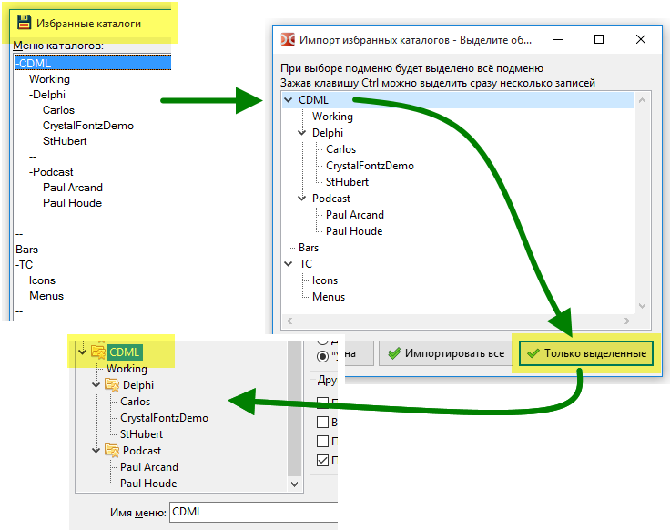
Также возможна обратная операция: экспорт всех или части избранных каталогов в Избранное Total Commander.
Чтобы это сделать, нажмите кнопку "Экспорт..." и выберите один из двух вариантов экспорта.
Если вы хотите заменить все записи Total Commander, то выберите "в файл wincmd.ini TC (удалить существующие)".
И здесь тоже вы можете выбрать, экспортировать все или только выбранные.
Для выбора нескольких записей используйте зажатую клавишу Ctrl.
Если Total Commander был запущен, то вам необходимо будет перезапустить его (закрыть и снова открыть).
Total Commander, в отличие от Double Commander, не предлагает простые способы создания структурированного списка и сортировки, таким образом, вы можете импортировать Избранное из Total Commander, организовать нужным образом список и экспортировать обратно!
*Примечание: Функция была протестирована и INI-файл Total Commander вряд ли будет повреждён, но, конечно, создание резервной копии файла перед экспортом было бы хорошим решением и всячески приветствуется.
Вы делаете это на свой страх и риск!
...риск открыть для себя такую хорошую программу, как Double Commander!
Со временем может случиться, что в ваших избранных каталогах окажутся записи, указывающие на каталоги, которые больше не существуют.
Чтобы найти эти записи, в окне настройки избранных каталогов нажмите кнопку "Разное" и выберите "Проверить существование всех путей".
Это заставит приложение просканировать все каталоги, на которые указывают ваши записи.
Если подобные записи будут найдены, то слева от них появится значок ошибки.
Слева от имени подменю с хотя бы одной записью с ошибкой также будет показан специальный значок с ошибкой.
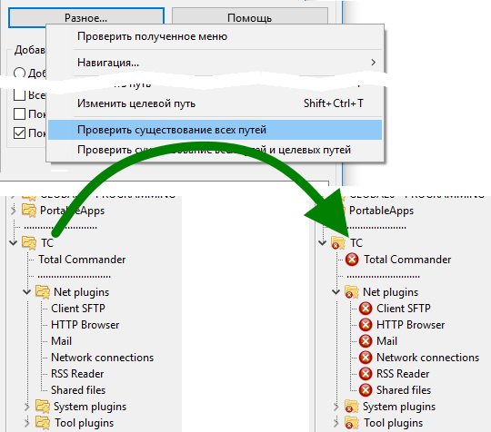
Таким образом, вы можете либо стереть эти записи, так как их каталоги больше не существуют, или же оставить.
Почему оставить? Потому что если использовать Double Commander на USB-флешке, то совершенно нормально, если на компьютере не будет каталогов, которые есть на другом.
Но если так, то как функция "Проверить существование всех путей" может вам помочь?
Очень просто: функция уберёт эти записи из всплывающего меню избранных каталогов в главном окне.
Записи несуществующих папок, не будут отображаться!
Тем не менее, они не будут навсегда удалены из внутреннего списка избранных каталогов, они просто не будут показаны в меню в текущей сессии.
Смотрите результат предыдущего примера.
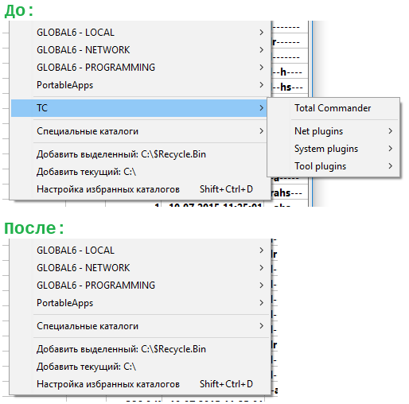
При пополнении списка избранных каталогов может возникнуть ситуация, когда вам понадобиться добавить сразу несколько каталогов.
Есть два способа сделать это.
Первый способ: непосредственно из главного окна, выделив нужные
Это очень просто: выделите каталоги, которые хотите добавить, вызовите меню избранных каталогов и выберите пункт "Добавить Х выделенных каталогов".
Каталоги буду добавлены в соответствии с настройками добавления из главной панели.
Если у вас выбрана опция "Умное добавление", то увидите, как хорошо они будут размещены!

Второй способ: похож на первый, но одновременно открыты и главное окно, и окно настройки избранных каталогов
Это так же легко: вызовите окно настройки избранных каталогов, поставьте курсор в место, куда хотите добавить, после чего нажмите кнопку "Добавить" или "Вставить" и выберите "текущий или выделенные каталоги активной панели".
Теперь вы можете сортировать, переименовывать и организовать добавленные как пожелаете.
Одна из скрытых возможностей.
Как было показано в пункте 2.7, в настройках записи можно указать и переход в неактивной панели, но при этом иногда было бы желательно изменить каталог только в активной панели.
Вы можете сделать это с помощью маленькой хитрости: зажав клавишу Ctrl при щелчке по нужной записи в меню избранных каталогов.
И DC перейдёт в каталог, указанный для активной панели, игнорируя второй, для неактивной.
Также одна из скрытых возможностей.
Если во всплывающем меню избранных каталогов вы увидели опечатку или же хотите что-то изменить, то, конечно, вы можете выбрать пункт, который откроет окно настроек, найти в дереве нужную запись и внести необходимые изменения.
Но есть маленькая хитрость, как сделать это лучше, быстрее и проще.
Вы может щёлкнуть по пункту меню избранных каталогов с зажатой клавишей Shift и DC откроет окно настроек, перейдя непосредственно к нужной записи.
Вам не придётся искать её в списке!
В окне настроек избранных каталогов есть опция "Показывать в меню также и [путь]".
Если эта опция включена, во всплывающем меню Double Commander покажет полный путь для каждой записи.
Таким образом, вы будете видеть не только имя записи, но и каталог, в который перейдёте после выбора.
Это может раздражать, так как занимает много места на экране.
Но в некоторых случаях (например, специальные каталоги Windows или переменные окружения, указывающие на каталоги) такая подсказка может быть удобна.
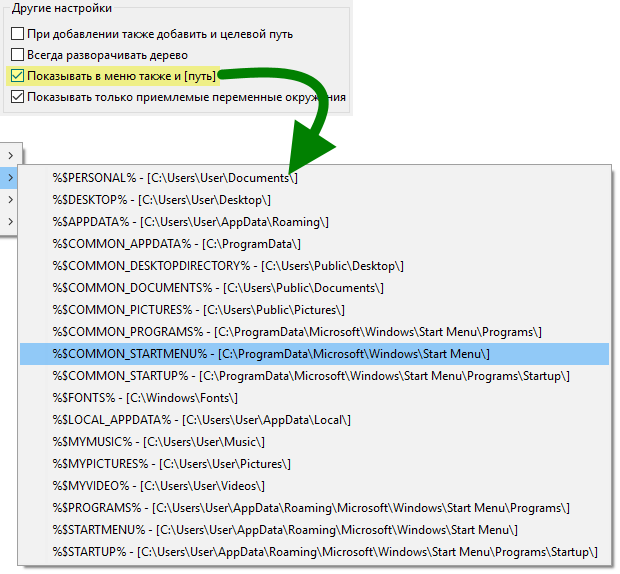
В пункте "Специальные каталоги" всплывающего меню избранных каталогов можно увидеть переменные окружения.
Не обязательно ВСЕ переменные на самом деле являются каталогом.
В настройках избранных каталогов вы можете отметить опцию "Показывать только приемлемые переменные окружения".
Когда эта опция включена, DC попытается исключить из меню переменную окружения, которая не выглядит как правильный путь, по крайней мере, её начало.
DC не проводит проверку, что путь на самом деле существует, но это позволит быстро убрать из списка очевидно неподходящие.
Возможно, в избранных каталогах Double Commander существуют и некоторые другие маленькие возможности и функции, которые здесь не описаны: трудно (а иногда раздражает, даже если по-прежнему необходимо) постоянно обновлять файл справки.
Но, конечно, большинство из них описаны здесь и эта страница охватывает, по крайней мере, наиболее важные моменты.